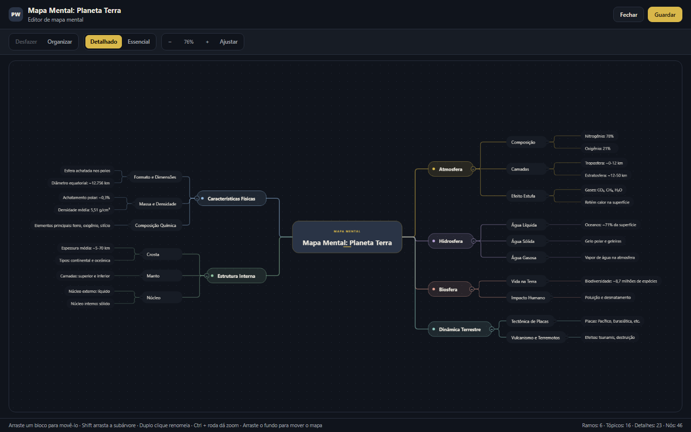
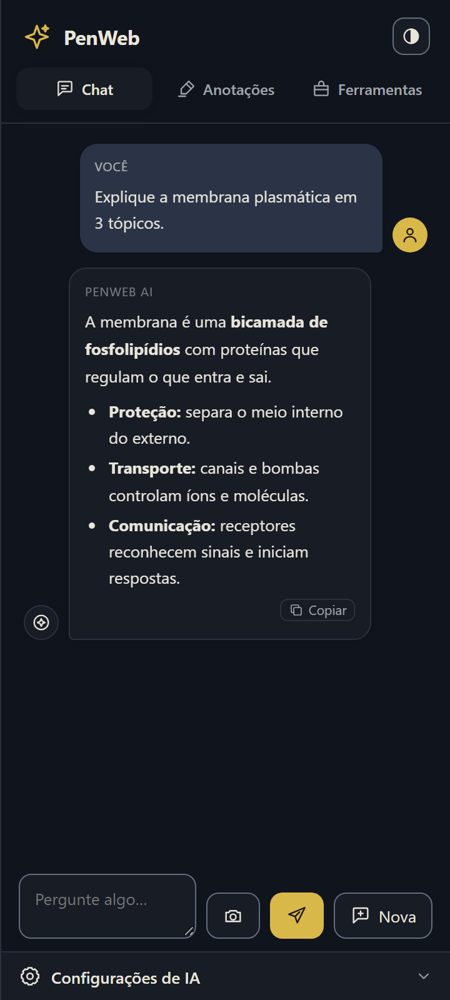
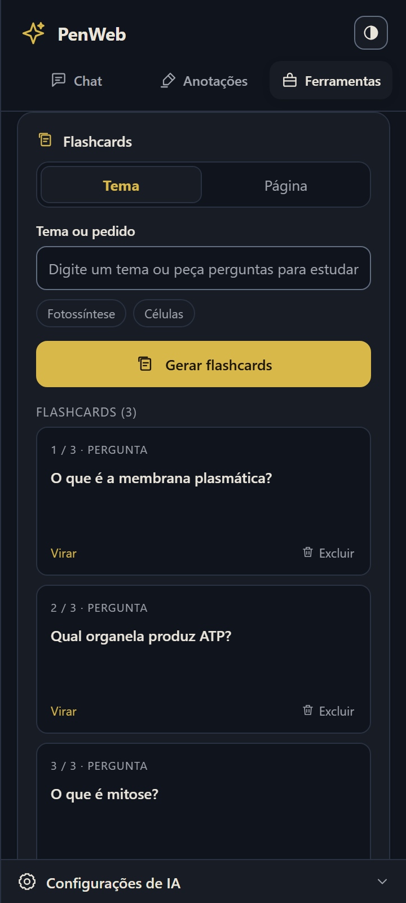

Instale e ative
Adicione o PenWeb à Chrome Web Store e ative a caneta na página em que você está estudando.
Grife, desenhe e pergunte em qualquer página, PDF ou videoaula. A IA usa o seu material como contexto para explicar, resumir, criar flashcards e mapas mentais — com a sua chave, direto no painel.
Grátis, sem conta. Feito para estudantes, concurseiros e residentes de medicina.



Caneta, grifos e IA trabalham juntos no painel lateral. Sem trocar de app, sem perder o contexto.
Feito com a mesma base da extensão: local, sob seu controle e sem assinatura.
Pressão, quatro pontas e marca-texto translúcido direto sobre a página. O traço acompanha a mesa digitalizadora e não interrompe a leitura.
A célula é a unidade básica da vida. A membrana plasmática controla o que entra e sai, enquanto as mitocôndrias transformam energia e o núcleo guarda a informação genética.
O chat recebe o texto da página e os seus grifos como contexto. Peça uma explicação, um resumo ou uma comparação — a resposta fica ao lado do material.
Abra o mapa em uma aba, arraste os blocos, use Shift para mover a subárvore e Ctrl + roda para dar zoom. O layout fica do seu jeito — e as posições são salvas.
Transforme o material em flashcards e resumos. A IA escreve as perguntas; você decide quando virar a carta e o que revisar de novo.

Do botão flutuante ao mapa mental, sem instalar outro app.
Adicione o PenWeb à Chrome Web Store e ative a caneta na página em que você está estudando.
Use a caneta, o marca-texto ou selecione um trecho. A barra flutuante acompanha o seu ritmo.
Abra o chat, gere flashcards ou organize um mapa mental. As posições e anotações ficam salvas.
O PenWeb não pede conta e não cobra assinatura. A IA usa a chave que você já tem, e as chamadas saem do seu navegador direto para o provedor escolhido.
Conecte OpenRouter, Google Gemini ou Groq. A chave fica só no seu navegador.
Ainda com dúvida? Fale com a gente pelo e-mail dwlabs.penweb@gmail.com.
Abra o PDF ou a videoaula no Chrome, ative o PenWeb e use o marca-texto ou a caneta diretamente sobre a página, sem alterar o arquivo original.
Sim. O PenWeb desenha uma camada sobre a página atual: funciona em artigos, apostilas online, plataformas de curso e videoaulas no YouTube.
Sim, é grátis e não pede conta, e-mail ou login. É só instalar na Chrome Web Store e usar na hora.
Não. O PenWeb usa a sua própria chave de API (OpenRouter, Gemini ou Groq). Você paga direto ao provedor pelo que usar — sem assinatura da PenWeb.
Não. Desenhos, grifos e mapas ficam no armazenamento do seu navegador. Quando você aciona uma ação de IA, apenas o texto necessário é enviado ao provedor configurado por você.
Deixe seu e-mail e receba o acesso à versão BYOK Final mesmo depois que a Chrome Web Store avançar para a próxima versão.
Instale o PenWeb, ative a caneta e transforme qualquer página em material de revisão.